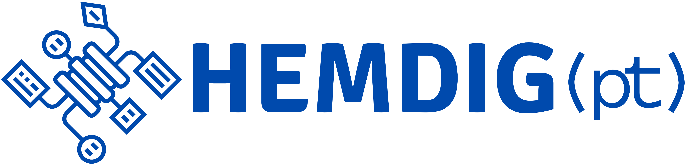

A Framework for Collecting, Organizing, and Processing Digitized Newspaper Pages in Portuguese
2024-06-03

Diagram of HemDig(pt) Framework Phases
Phase 1: Planning and Preparation
Summary: The first phase consists of methodological and technical planning and preparation. This phase introduces a set of tools and strategies to develop basic knowledge and resources, ensuring subsequent phases are executed more efficiently and accurately.
- Literature Review:
- Initial literature review.
- Tools: Zotero, Scopus database search, and a public reference library.
- Basic Technical Preparation:
- Introduction to relevant lessons from Programming Historian.
- Topics: Basic computational knowledge, data management, writing, and publishing.
- Research Planning:
- Suggestions for overall research planning.
- Strategies: Documentation, data organization, and usage licenses.

Phase 1 Diagram
Phase 2: Critique of Collections
Summary: The second phase involves the critical evaluation of the collections and graphical interfaces of the selected repositories. This task is crucial for understanding the biases, limitations, and possibilities of each collection, and for developing consistent methodological strategies and theoretical reflections aligned with the technical, political, and theoretical aspects of each repository.
Organization:
- Case Studies:
- Repositories: Brazilian Digital Newspaper Library, National Digital Library of Portugal, and Municipal Newspaper Library of Lisbon.
- Chapter 4: In-depth evaluation of the data from these repositories.
- Analysis of Graphical Interfaces:
- Chapter 5: Evaluation of the graphical interfaces of the selected repositories.
- Method: Utilizes the method developed by the Impresso project team for graphical interface evaluation.
- Comparative Effort:
- Chapter 6: Elements to support the comparison of collections and interfaces.
- Presents data and a series of visualizations and general comparisons.
Note: - This chapter provides data and visualizations for general comparison. - In-depth analyses are beyond the scope of this research and will be used for future articles and publications. - Data is available under the CC-BY-SA 4.0 license for use by other researchers.

Phase 2 Diagram
Phase 3: Data Collection
Summary: In this phase, we outline strategies for the collection and organization of data and metadata from the studied collections.
Organization:
- Reports and Documentation of Searches:
- Chapter 7: Brief justification for the importance of consistent registration and methodological documentation strategies.
- Section 7.1: Introduction and explanation of a methodological registration tool developed to assist research in digital repositories.
- Data Scrapers:
- Chapter 8: Presentation of the strategies and tools used for metadata and data collection in the three repositories utilized.
- Organization of Datasets:
- Chapter 9: Presentation of possibilities for the general organization of the collected data.

Phase 3 Diagram
Phase 4: Data Processing
Summary: This phase organizes tutorials, documentation, and tools for executing OCR (Optical Character Recognition) and OLR (Optical Layout Recognition) on digitized Portuguese-language newspapers.
Organization:
- Testing and Evaluation:
- Conducted a series of tests with different tools, ranging from CLI (Command Line Interface) to GUI (Graphical User Interface), and with varying levels of complexity.
- Evaluated open-source and free tools, and listed proprietary options useful for newspaper OCR.
- CLI Tools:
- Command Line Interface Tools: Tesseract, OCR-D, and Kraken.
- Presented tutorials, documentation, tests, and results obtained for each tool.
- GUI Tools:
- Graphical User Interface Tools: gImageReader.
- Presented tutorials, documentation, tests, and results obtained.
- Programming Historian Lessons:
- Listed relevant lessons for those seeking to perform OCR on newspapers.
Objective: - More than providing step-by-step usage guides, the goal is to present key features, advantages, and disadvantages of each tool. - Encourage critical reflection on the use of these tools. - Support researchers with knowledge and materials to consciously and critically develop their workflows.

Phase 4 Diagram
Phase 5: Review, Preservation, and Publication
Summary: In this final phase of the framework, the objective is to conduct a comprehensive review of the documentation, metadata, and data structure, as well as to publish the research data.
Key Points:
- Review and Consolidation:
- Conduct a thorough review of the documentation and metadata.
- Consolidate the data structure.
- Continuous Process:
- Emphasize that this phase is a continuation and consolidation of a process that began in Phase 1.
- Documentation and methodological recording should be carried out concurrently with data selection, collection, processing, and analysis.
- This should be done transparently and in a standardized manner, adhering to clearly defined and publicized criteria.
- Reference to Phase 1:
- Recommending revisiting Phase 1 for key aspects of documentation and methodological recording.
- Chapters Outline:
- Consolidation of Documentation:
- Ensure all documentation is comprehensive and well-organized.
- Review of Data and Metadata:
- Conduct a detailed review to ensure accuracy and completeness.
- Data Publication:
- Publish the research data, making it accessible for further research and analysis.
- Consolidation of Documentation:

Phase 5 Diagram
Example 2: Impresso Review Method for Interface Analysis
Overview:
- Objective: Assess the usability and effectiveness of graphical interfaces of digital newspaper repositories using the Impresso project’s evaluation method.
Graphical Interface Analysis:
- Criteria Evaluated:
- Browsing
- Search
- Result Sorting
- Result Filtering
- Result Display
- Viewer
- User Interaction
- Enrichment
- Info on Digitization
- Connectivity
- APIs
- Newspaper Metadata
Key Insights from the Graph:
- Strengths:
- Browsing and Search: High scores indicate effective navigation and search functionalities.
- Newspaper Metadata: Well-structured and accessible metadata.
- Weaknesses:
- Result Display and Filtering: Lower scores suggest the need for improvement in how search results are displayed and filtered.
- Viewer and User Interaction: Indicates areas for enhancing the user interface for better interaction and viewing experience.
Comparison with Original Research (Ehrmann, Bunout, and Düring [2019]):
- Similarities:
- Both studies highlight strong performance in browsing and search capabilities.
- Metadata organization is a common strength.
- Differences:
- The current study indicates weaker performance in result display and filtering compared to the original research.
- Viewer and user interaction scores are notably lower in the current study, suggesting areas for improvement.
Visual Representations:
Current Study:

Original Research: